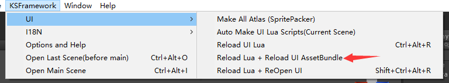

在KEngine中，每一次的资源加载都伴随各种ResourceLoader的出现。 因此要对一个资源进行卸载，简单的做法就是对让Loader的引用计数变成0并回收。
在KSFramework中，默认的UI框架提供了UI的AssetBundle重载功能；而其它游戏资源，如特效、模型等在运行时可能进行拷贝的游戏对象，则要细心考虑重载的时机了。
下面将解析UI的AssetBundle重载是怎么做的。
参考UI的Asset Bundle重载

您可以通过菜单来控制正在打开的UI进行重载Asset Bundle。
这主要是通过以下代码实现的：
// UIModule.cs
private IEnumerator LoadUIAssetBundle(string name, CUILoadState openState, KCallback callback = null)
{
if (openState.UIResourceLoader != null)
{
openState.UIResourceLoader.Release(true);// now!
Log.Info("Release UI ResourceLoader: {0}", openState.UIResourceLoader.Url);
openState.UIResourceLoader = null;
}
// ..............................
// ..............................
// ..............................
}
如前面资源垃圾回收机制所说，资源是不会立刻被释放的，有间隔时间；但你依然可以调用ResourceLoader.Release(true)函数来强制立即进行垃圾回收、释放资源。这有点像Unity的GameObject.DestroyImmediate()函数。
在UI的加载中使用了StaticAssetLoader，它引用变0后，链式反应，让其依赖的AssetFileLoader->HotBytesLoader->WWWLoader的引用计数分别减1。
当WWWLoader的引用计数为0，它将会把加载的AssetBundle从内存中释放。
这时候，重新加载资源，由于内存中已经不存在这份Asset Bundle了，所以将从
UI Asset Bundle重载的隐患
由上可知，只有在一个资源引用为0计数时进行重载，它才生效。 像一些被多处依赖的的资源，如图集，它是由于被各处都存在引用，所以要把它进行重载是不容易的。 AssetBundle的重载也将在今后的开发中进一步改善。